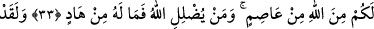
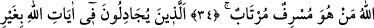
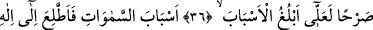

ALLAH TEÂLÂ
BÜYÜKLÜK TASLAYANIN
KALBİNİ MÜHÜRLER
28. Firavun ailesinden olup, imanını gizleyen bir mümin adam şöyle dedi: Siz bir
adamı «Rabbim Allah’tır» diyor diye öldürecek misiniz? Halbuki o, size
Rabbinizden apaçık mûcizeler getirmiştir. Eğer o yalancı ise yalanı kendisinedir.
Eğer doğru söylüyorsa sizi tehdid ettiğinin (azâbın), bir kısmı olsun gelip size çatar.
Şüphesiz Allah, haddi aşan, yalancı kimseyi doğru yola eriştirmez.